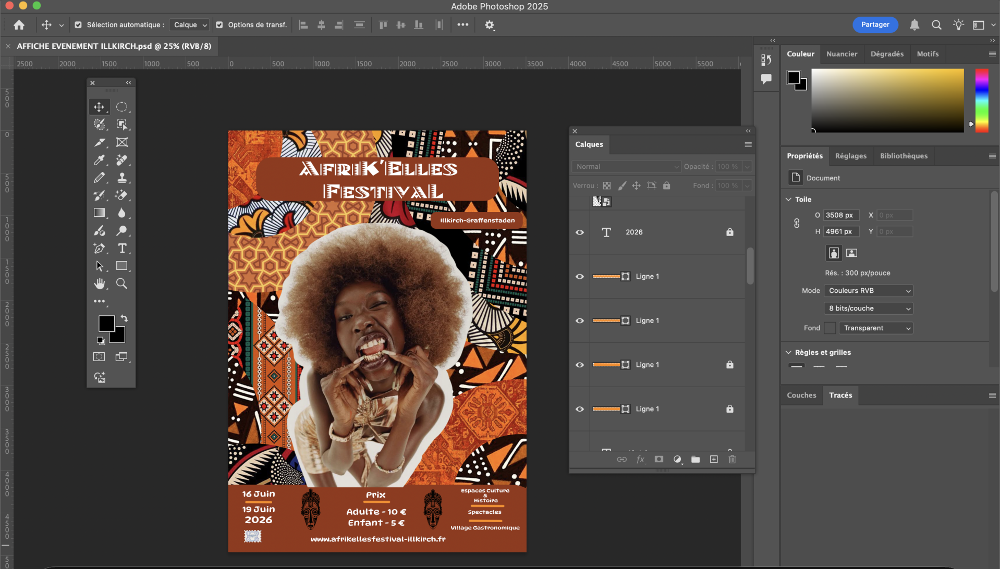
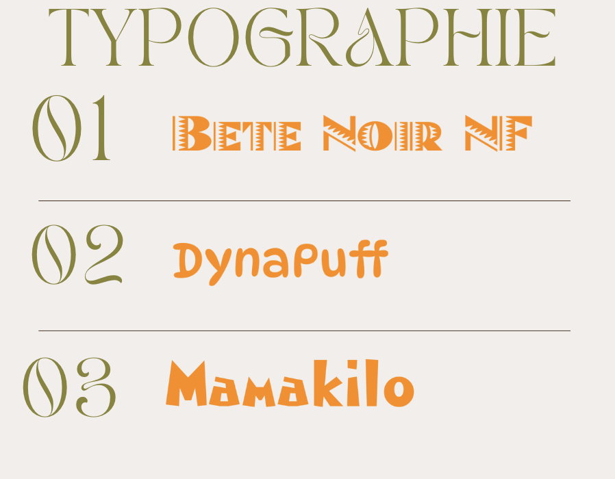

Afrik'elles
Identité Visuelle & Design de Festival
Le Concept
Création de l'identité visuelle pour "Afrik'elles", un festival fictif célébrant la scène musicale féminine africaine. L'objectif était de concevoir une affiche percutante qui rend hommage à la force et à la créativité des artistes Féminine.
Direction Artistique
Réalisée entièrement sur Adobe Photoshop, l'affiche repose sur une palette de couleurs chaudes (rouge terre, orange ocre) pour évoquer la chaleur du continent. La figure féminine est placée au cœur de la composition pour incarner le thème central de l'événement.

Compétences développées
Ce projet a permis de travailler la cohérence graphique globale : équilibre entre la typographie, les éléments visuels et les contrastes de couleurs. Un travail approfondi a été mené sur le détourage, la gestion des calques et l'uniformisation visuelle sous Photoshop.
